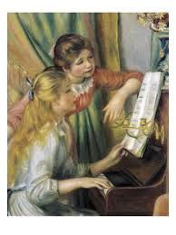
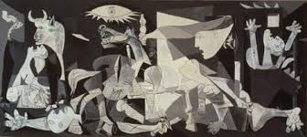
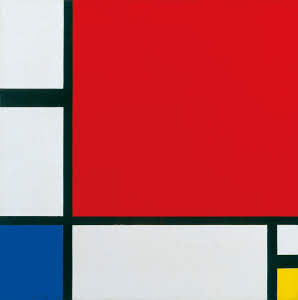
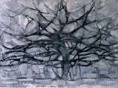
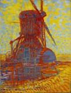
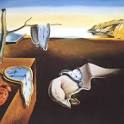
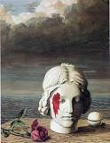

The Renaissance was a period in European history marking the transition from the Middle Ages to Modernity.
It occured in the 15th and 16th centuries.
It occurred after the Crisis of the Late Middle Ages and was associated with great social change.
The Renaissance also promoted the rediscovery of classical philosophy, literature and art.
- Leonardo Da Vinci
-
Mona Lisa

- The Last Supper

- Lady with an Ermine

- Michelangelo
- The Creation Of Adam

- The Last Judgment

- The Entombment

Leonardo di ser Piero da Vinci, known as Leonardo da Vinci, was an Italian polymath of
the Renaissance whose areas of interest included invention, drawing, painting, sculpture, architecture,
science, music,
mathematics, engineering, literature, anatomy, geology, astronomy, botany, paleontology, and
cartography.
Michelangelo di Lodovico Buonarroti Simoni, known best as simply Michelangelo,
was an Italian sculptor, painter, architect and poet of the High Renaissance born in the Republic of
Florence,
who exerted an unparalleled influence on the development of Western art.
Impressionism is a 19th-century art movement.
It's characterized by relatively small, thin, yet visible brush strokes.
Also open composition, emphasis on accurate depiction of light in its changing qualities
(often accentuating the effects of the passage of time), ordinary subject matter etc...
Impressionist art is a style in which the artist captures the image of an object as
someone would see it if they just caught a glimpse of it.
They paint the pictures with a lot of color and most of their pictures are outdoor scenes.
The Impressionists created a model for freedom and subjectivity that promoted
artistic freedom that which many artists of the past longed for.
Their example empowered later artists that took it much further than they did.
- Claude Monet
- Women In The Garden

- Luncheon On The Grass

- Poppy Field

- Pierre-Auguste Renoir
- Girls at the Piano
 - La Grenouillere

- The Skiff

Oscar-Claude Monet was a French painter, a founder of French Impressionist painting
and the most consistent and prolific practitioner of the movement's philosophy of
expressing one's perceptions before nature, especially as applied to plein air landscape painting.
Pierre-Auguste Renoir, commonly known as Auguste Renoir, was a French artist
who was a leading painter in the development of the Impressionist style.
Cubism is an early-20th-century avant-garde art movement
that revolutionized European painting and sculpture, and inspired related movements in music, literature and
architecture.
It has been considered the most influential art movement of the 20th century.
Cubism was created principally by the painters Pablo Picasso and Georges Braque in Paris between 1907 and
1914.
The Cubist style is characterized by fragmented subject matter deconstructed in such a way
that it can be viewed from multiple angles simultaneously.
- Pablo Picasso
- Guernica
 - The Weeping Woman

- Girl before a Mirror

- Piet Mondrian
- Composition II in Red,Yellow and Blue
 - Gray Tree
 - Windmill in Sunlight

Pablo Ruiz Picasso was a Spanish painter, sculptor, printmaker, ceramicist and theatre designer
The Blue Period of Picasso is the period between 1900 and 1904,
when he painted essentially monochromatic paintings in shades of blue and blue-green,
only occasionally warmed by other colors.
Pieter Cornelis Mondriaan, after 1906 Piet Mondrian,
was a Dutch painter and theoretician who is regarded as one of the greatest artists of the 20th century.
Surrealism was a cultural movement which developed in Europe in the
aftermath of World War I and was largely influenced by Dada.
The movement is best known for its visual artworks and writings and the juxtaposition of uncommon imagery.
Surrealism is based on the belief in the superior reality of certain forms of previously neglected
associations,
in the omnipotence of dream, in the disinterested play of thought.
Andre Breton defined Surrealism as "psychic automatism in its pure state,
by which one proposes to express - verbally,
by means of the written word, or in any other manner - the actual functioning of thought."
A reminder:
- Salvador Dali
- The Persistence of Memory
 - Geopoliticus Child Watching the Birth of the New Man

- Apparition of Face and Fruit Dish on a Beach

- Rene Magritte
- Memory 
- Not to Be Reproduced

- Le Jockey perdu

- Max Ernst
-
At the first clear word

- The large forest

- The Beautiful Season

- Frida Kahlo
-
Without Hope
- The Wounded Deer
Salvador Domingo Felipe Jacinto Dali i Domenech, 1st Marquess of Dali de Pubol
was a Spanish Surrealist artist renowned for his techncal skill
precise draftsmanship and the striking and bizarre images in his work.
Rene Francois Ghislain Magritte was a Belgian Surrealist artist.
He became well known for creating a number of witty and thought-provoking images.
Often depicting ordinary objects in an unusual context,
his work is known for challenging observers' preconditioned perceptions of reality.
Max Ernst was a German painter, sculptor, graphic artist, and poet.
A prolific artist, Ernst was a primary pioneer of the Dada movement and surrealism.
Frida Kahlo was a Mexican painter known for her many portraits, self-portraits, and works inspired by
the nature and artifacts of Mexico.
Inspired by the country's popular culture, she employed a naïve folk art style to explore questions
of
identity, postcolonialism, gender, class, and race in Mexican society.